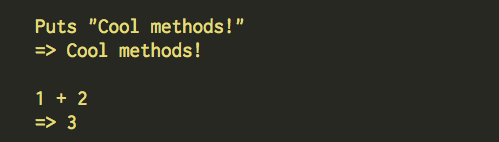
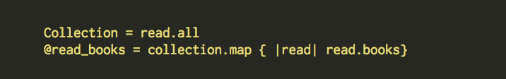

Enumerable Methods
Feb 8th, 2015
So far in Ruby we've learned about a lot of cool things. One of the great characteristics of Ruby is that is often reads like plain english. As you know, in English we use verbs to create action. Likewise in Ruby we use methods. Here are some examples of the methods puts and +.

Those two are regular, fairly common methods. A different more comples type of method is the Enumerable methods. These are slightly more comples than regular methods because they're slighly more powerful. In fact, they actually go by the term modules, because they're groups of methods packaged into one. Kind of like if we used one verb for three verbs: skip, sing, and smile becomes skingle.

We use emnumerables when we iterate over Arrays and Hashes. The enumerable method #map is very similiar the the regular method collect because it iterates over the code and then collects the results. The example below maps a collection of books and returns only the books the have been read.